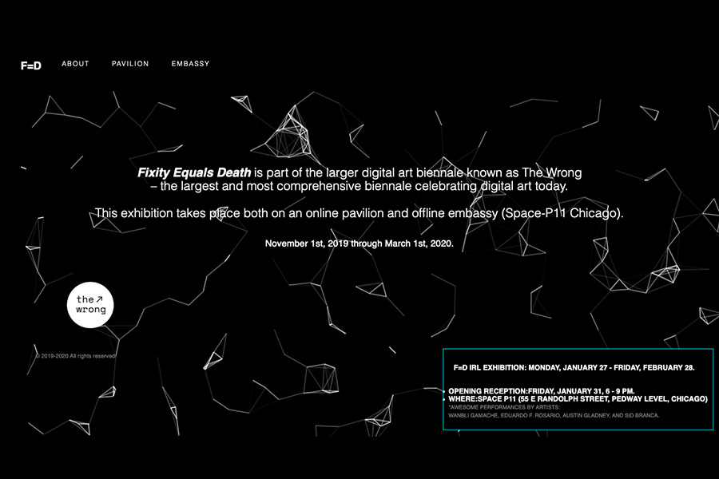
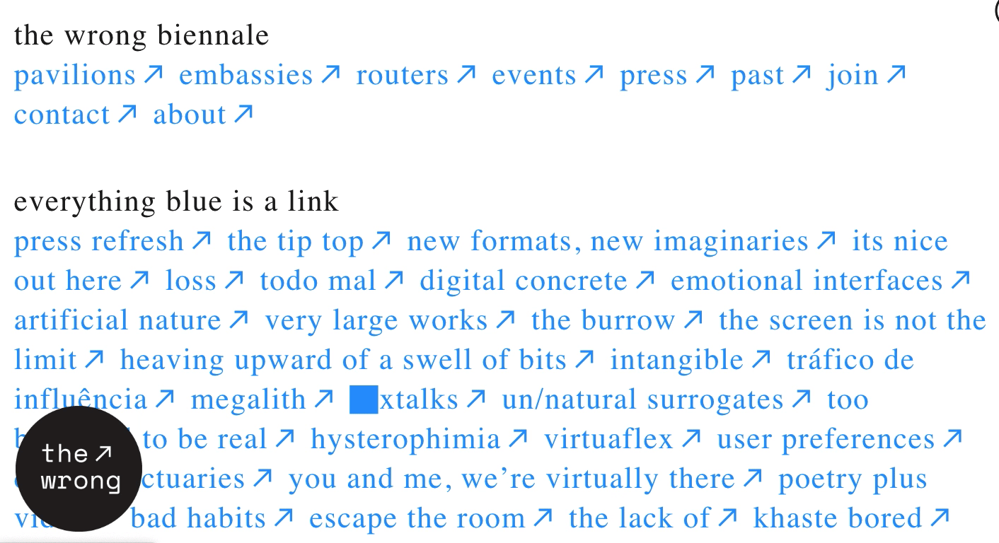

A portal to F=D online exhibition
web development
F=D (Fixity Equals Death) Pavilion
F=D is part of the larger digital art biennale known as The Wrong – the largest and most comprehensive biennale celebrating digital art today. This exhibition takes place both on an online pavilion and offline embassy Space-P11 Chicago).
The nature of F=D is to explore mixtures of the physical and virtual realms. Seeking to create a bridge for offline, online and digitally native works to coexist, it is not solely a platform for exhibiting works, but an experimental art medium unto itself. Therefore, most of the artworks showcased in this online pavilion are also designed to inhabit the exhibition's physical embassy at Space p11. Embedded within the Pedway, a network of pedestrian tunnels threaded through downtown Chicago, Space p11 becomes a hub where visitors can escape the winter cold and immerse themselves in alternative worlds.
Access online pavilion, here

Curator team: Francisca Rudolph, Madison Rose Young, Jiaqi Zhang
Featuring artists:
Snow Yunxue Fu, Wanbli Gamache,
Ethan Proia, Jason Zhao, Sid Branca,
Eric Fleischauer, Doug Rosman,
Rui Sha, Yiyao Nie,
Anna Christine Sands,
Mikey Peterson,
Alan Perry, Snow Xu, David Steinberg, Supreme Hinton,
Eduardo F. Rosario, Insun Kang, Yuzhu Chai, Amay Kataria ,
Austin Gladney, Jas Brooks, Xu Han, Li Yao.
More about F=D Embassy, here